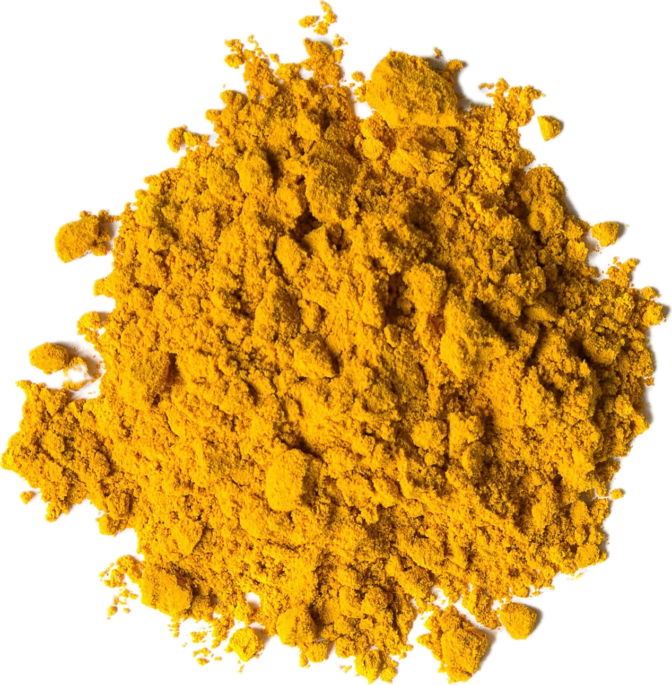

Curcuma longa
Overview
Turmeric is a flowering plant in the ginger family, native to Southeast Asia. It produces rhizomes that are dried and ground into a bright yellow-orange powder, which is prized for its vibrant color, warm flavor, and medicinal properties. Turmeric has a peppery, earthy flavor with hints of ginger and orange.
Cultural Overlap
Turmeric is used in cuisines around the world, particularly in Indian, Southeast Asian, Middle Eastern, and African cuisines. It is used to color and flavor dishes such as curries, rice, soups, stews, and pickles. Turmeric also has cultural significance in traditional medicine and rituals, where it is believed to have various health benefits and spiritual properties.